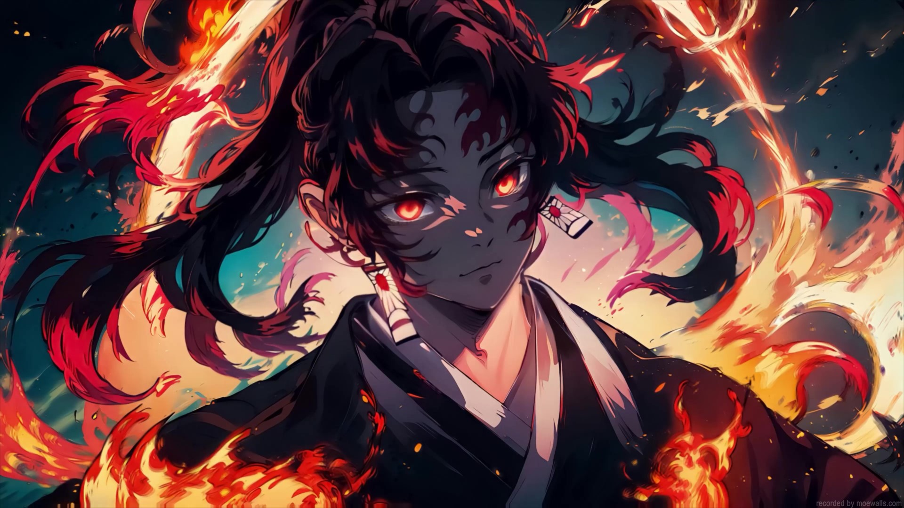

Yoriichi

Origem e Juventude -
Yoriichi nasceu durante o Período Sengoku, uma era de grande conflito no Japão, em uma família de espadachins habilidosos. Desde seu
nascimento, ele foi visto como uma criança estranha e abençoada com um talento incomum. Diferente de seu irmão gêmeo, Michikatsu,
Yoriichi nasceu com uma marca peculiar na testa, considerada um mau presságio por sua família. No entanto, essa marca era na verdade
um sinal de sua incrível habilidade e sensibilidade espiritual.
Desde muito jovem, Yoriichi demonstrou uma força e agilidade sobre-humanas, além de uma intuição extraordinária para o combate. Ele
também desenvolveu naturalmente o Hinokami Kagura, a Dança do Deus do Fogo, que mais tarde seria reconhecida como a técnica original
de Respiração do Sol, a mais poderosa entre todas as técnicas de respiração usadas pelos caçadores de demônios.
o
A Relação com Muzan Kibutsuji -
Yoriichi é o único caçador de demônios que chegou perto de destruir Muzan Kibutsuji. Quando eles se enfrentaram pela primeira vez,
Yoriichi conseguiu identificar os pontos fracos de Muzan em um instante, usando sua Respiração do Sol para desferir golpes precisos
que quase aniquilaram o Rei dos Demônios. No entanto, Muzan conseguiu escapar ao se dividir em várias partes, uma manobra desesperada
que garantiu sua sobrevivência. Esse encontro marcou profundamente Muzan, deixando-o aterrorizado pela possibilidade de enfrentar
Yoriichi novamente.
o
Tristeza e Solidão -
Apesar de sua incrível força, a vida de Yoriichi foi marcada por tragédias pessoais. Sua habilidade incomparável e a marca que
carregava o isolavam das outras pessoas, incluindo seu próprio irmão, Michikatsu, que sucumbiu à inveja e acabou se tornando um
demônio, assumindo o nome de Kokushibo, uma das Luas Superiores. A perda de sua família e a traição de seu irmão foram golpes
devastadores para Yoriichi, que passou o resto de sua vida lutando contra demônios, mas sempre carregando o peso dessas tragédias.
Yoriichi nunca perdeu sua bondade e compaixão, ajudando a criar a organização dos Caçadores de Demônios e ensinando suas técnicas
para aqueles que estariam dispostos a enfrentar o mal. No entanto, sua habilidade era tão singular que poucos puderam aprender
completamente sua técnica, e a Respiração do Sol foi diluída em diversas outras formas de respiração ao longo dos séculos.
o
Legado -
O legado de Yoriichi é imortalizado não apenas em sua quase vitória sobre Muzan, mas também na criação das técnicas de respiração que
formaram a base da luta contra os demônios. A espada de Yoriichi, que possuía a cor vermelha característica, tornou-se um símbolo de
esperança e poder entre os caçadores de demônios. Mesmo séculos após sua morte, sua presença ainda era sentida, especialmente através
de Tanjiro Kamado, que herdou a Dança do Deus do Fogo de sua família.
Yoriichi é um personagem trágico, cuja vida foi definida por sua imensa força e igualmente grande solidão. Sua história é um lembrete
do fardo que vem com o poder, e de como mesmo aqueles abençoados com habilidades extraordinárias podem sofrer profundamente. Em
última análise, Yoriichi é lembrado como o caçador de demônios mais forte e virtuoso, cuja vida e legado deixaram uma marca indelével
no mundo de Demon Slayer.
Motivações: Derrotar Muzan e parar seu irmão
Técnica: Respiração do Sol
Altura: 190cm
Idade: Morreu com mais de 80